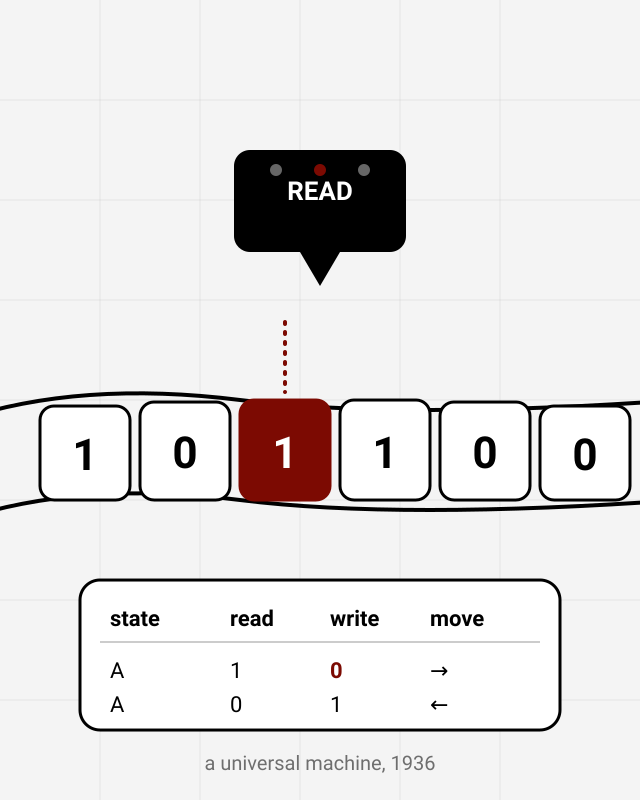

1912 – 1954 · England
Alan Turing
In 1936, aged 23, Turing wrote a paper describing an imaginary machine that could follow any set of instructions written on a strip of tape. That “universal machine” is the blueprint for every computer you have used: one device, any program. He described it a decade before anyone could build one.
During the Second World War he worked at Bletchley Park, Britain’s code-breaking centre, where he helped design the Bombe, a machine that cracked the German Enigma cipher and is credited with shortening the war. In 1950 he asked the question “Can machines think?” and proposed a test for it, now called the Turing test, which people still argue about every time a chatbot gets good.
Britain prosecuted him in 1952 for being gay, and he died two years later. He was formally pardoned in 2013, and since 2021 his face has been on the £50 note.
- 1936: describes the universal machine, the idea behind all computers.
- 1939–45: helps break Enigma at Bletchley Park.
- 1950: proposes the Turing test for machine intelligence.
“I propose to consider the question, ‘Can machines think?’” Opening line of his 1950 paper, Computing Machinery and Intelligence